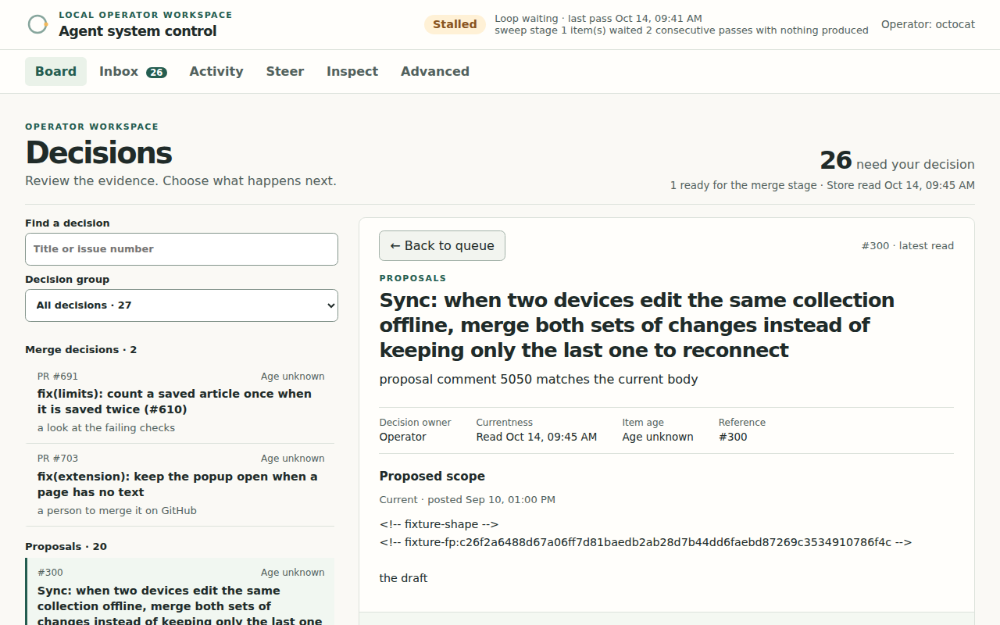
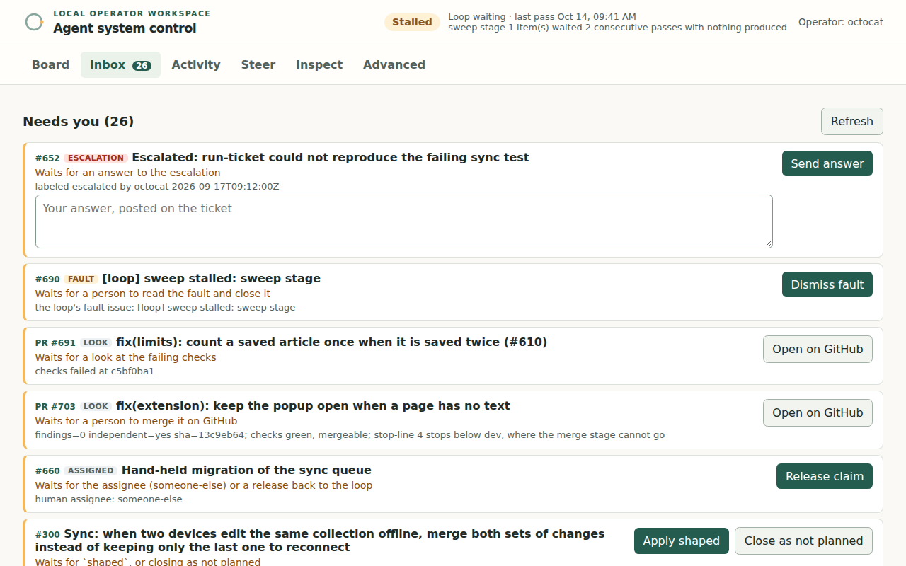
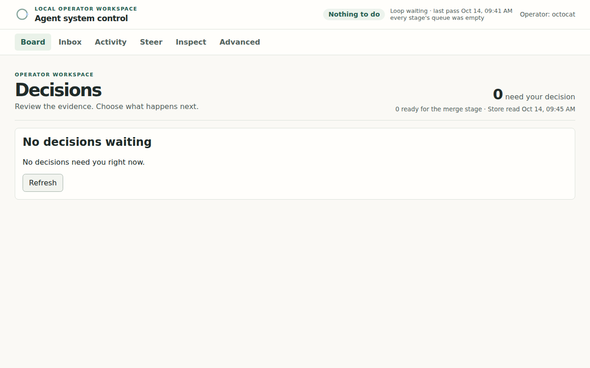
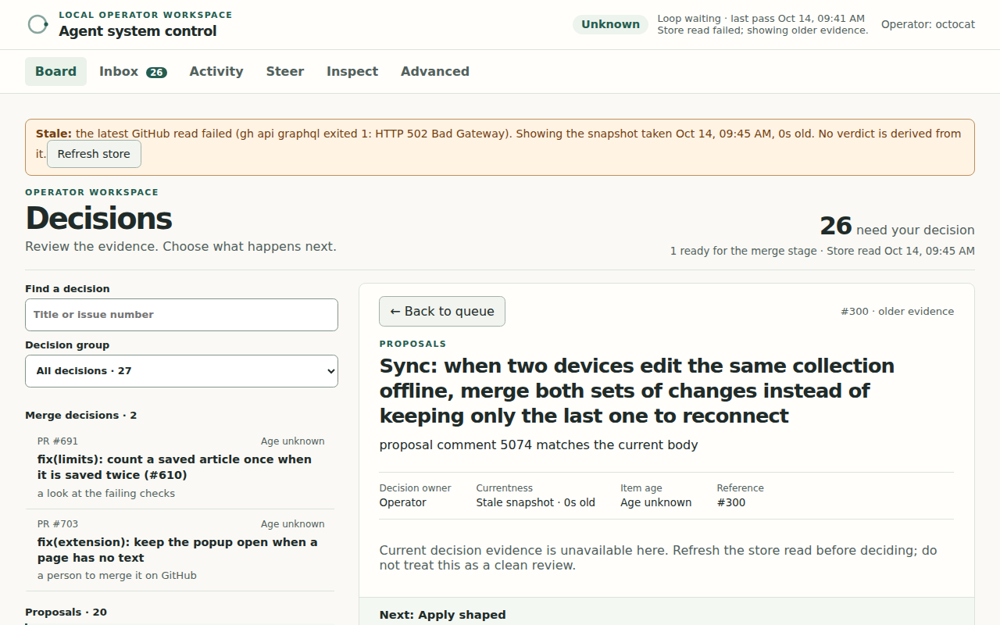

Coding agents run only on work you approved.
agent-system is a command-line coordinator for Claude Code, Pi, Codex cloud, and Claude Code web. You approve the work. It keeps each run inside your subscription's allowance and saves what the run did.
agentsys init --operator you@example.comOperator set to you@example.com. No autonomy grants are active.agentsys dispatch --task first-try \ --repo example-org/larkspur --class ci-repair \ --runtime claude-local --profile default \ --actions author-changes \ --estimate-five-hour 1 --estimate-weekly 1 \ --estimate-basis operator-bound \ --prompt "should not run"Awaiting approval (task first-try): No approval was supplied and there are no grants.
Nothing ran. A fresh install has no approvals and no grants, so every dispatch is held.
Every run passes two checks.
Either check can refuse on its own. The runtime is where the agent runs; the evidence stays on your machine.
- RequestA task, a repository, a runtime, the actions it may take
- AuthorityAn approval or a grant covers this exact work
- AdmissionThe job fits the allowance left in every usage window
- RuntimeClaude Code, Pi, Codex cloud, or Claude Code web
- EvidenceTranscript, checks, and a scorecard, saved per run
Authority
An approval covers one task. A grant covers a class of work until you narrow or revoke it. Only the operator, the person who owns the installation, creates either. Text that an agent or a code host such as GitHub wrote is data, never an instruction.
Admission
Before every dispatch it reads your subscription's usage and compares the job with each window the plan meters. If usage cannot be read, or the reading is stale, the job waits. Unknown is never treated as zero.
Seven things you can do with it.
-
Run one approved task
Approve a task for one repository, runtime, and set of actions, then dispatch it.
-
Repair CI failures
A failed CI run becomes a job. A standing grant lets matching repairs start without a new approval each time.
agentsys intake --event failure.jsonFeeding events in → -
Work a repository's tickets
The ticket loop shapes tickets, opens pull requests for the ones you grant, reviews and fixes them, and opens a release pull request.
agentsys loop arm --repo <path>Ticket loop example → -
Watch and steer
A local console in your browser, or the same board printed in a terminal.
agentsys ui --repo <path>Local control UI → -
Connect a local agent over MCP
A stdio MCP server that reads status, jobs, usage, readiness, evaluation, and evidence, and dispatches inside authority you already gave. It cannot create authority.
agentsys-mcpLocal MCP server → -
Keep evidence for every run
Each run keeps a transcript and a scorecard. Replay frozen cases to compare configurations on work you do.
agentsys scorecardsEvidence and evaluation → -
Stay inside your allowance
Admission reads your usage before every dispatch. A ledger limits paid provider calls.
It works a repository's tickets as far as you allow.
The loop runs one pass at a time. For each ticket it decides to act, skip with a reason, or report it blocked. A person takes every ticket from proposal to granted: shaped accepts the proposal, and auto grants the work.
- shape Drafts a shaped body for a ticket and posts it as a proposal. Applies no label.
- assess Proposes a verdict for each ungranted ticket. Changes no ticket.
- sweep Works one granted ticket into a pull request.
- review A model from the other family reviews the pull request.
- fix Fixes findings on pull requests the loop opened, up to a round cap.
- merge Into
devonly. Closed until a stop-line reaches 5 and you grant it. - close Closes a ticket whose work merged.
- release Opens the
dev→mainpull request. Never merges it. - verify After you merge a release and it deploys, runs your release checks and posts the results.
Stop-lines
Each ticket goes as far as its stop-line and no further. Every rung past it is a person's. The ladder is from the example policy.
- proposalA shape proposal matches the ticket body.
- granted
shapedis on the ticket and its effort has a current assessment. - pr-openA pull request into
devis open, mergeable, checks passing. - reviewedAn independent review names the pull request's current head.
- cleanThat review found nothing at medium or above.
- devThe pull request is merged into
dev. - releaseAn open
dev→mainpull request lists it. - verifiedThe release's checks passed on the deployed
main.
The example policy stops at rung 4. A person merges.
What it never does.
- Merge into
main - Turn on auto-merge
- Force-push, or push to a base branch
- Run a release
- Deploy to production
- Run anything on a fresh installWith no approval and no grant, every dispatch is held.
It refuses these before it checks authority, so a grant written too broadly cannot reach them.
One narrow merge exists and is off by default. The ticket loop can merge a pull request into dev only when the ticket's stop-line reaches the dev rung, an independent review of the current head is clean or has findings you accepted, check-pr reports the pull request ready, and you have granted merge-dev. A fresh install has no grants.
It records what happened, and says when it does not know.
- Each run keeps its transcript, event log, and artifacts under
evidence/<run-id>/in the state directory. - A scorecard keeps three things apart: what the checks reported, what the agent said about itself, and what you thought of the result.
- Reports give counts, not rates.
- A Claude Code web dispatch ends as
remote-uncertain, notcompleted, because the cloud acknowledges the prompt and reports nothing else. - Status output shows elapsed time and state, never an invented percentage.
agentsys statusNo runs recorded.agentsys scorecardsSamples: 00 sample(s). These are raw counts of individual tasks, not a success rate or a reliability estimate …
The last line is cut here; the command prints the rest.
See what needs you.
The console is a local page, bound to loopback. It shows the loop's tickets and pull requests and what waits for your decision, with the evidence beside it. Every screenshot uses made-up data from the Larkspur example.




Try it on a fresh install.
You need Node.js 22.12 or newer and one signed-in runtime. Each runtime also needs the manifest-dev plugins; the README lists what each runtime needs.
Install, build, and see the first refusal
git clone https://github.com/mocraimer/agent-system.git cd agent-system npm ci npm run build npm install -g . agentsys init --operator you@example.com agentsys readiness --runtime claude-local agentsys dispatch --task first-try --repo example-org/larkspur --class ci-repair \ --runtime claude-local --profile default --actions author-changes \ --estimate-five-hour 1 --estimate-weekly 1 --estimate-basis operator-bound \ --prompt "should not run"
If npm install -g . fails with a permissions error, skip it and write node dist/cli/main.js wherever a command says agentsys. readiness exits 1 and names what is missing if the runtime is not set up. The dispatch exits 1 on purpose: nothing runs without your approval.
Paste this to your coding agent
Set up agent-system by following https://raw.githubusercontent.com/mocraimer/agent-system/main/docs/AGENT-SETUP.md Do the numbered steps in order and run only the commands the guide gives. Ask me for the operator email and for the runtimes I will use; do not choose them. Do not approve work, create grants, dispatch tasks, or arm the loop. For each of those, tell me what it needs and stop. End by reporting the result of every step.
The agent installs and checks the tool, then stops at every step that needs you. It never creates authority.